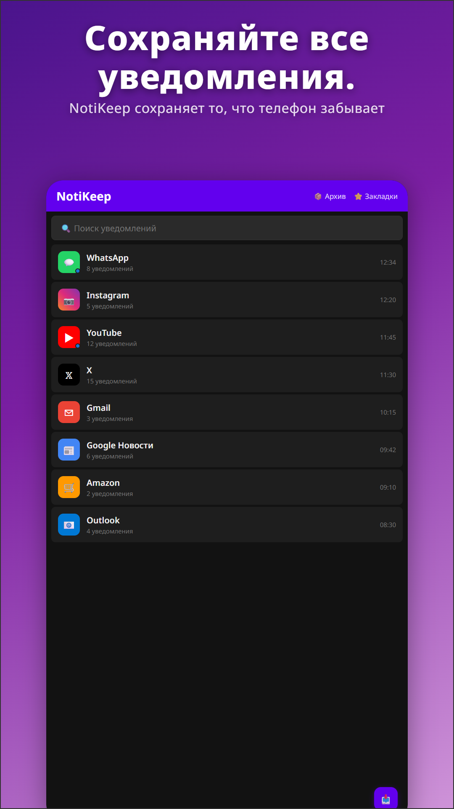
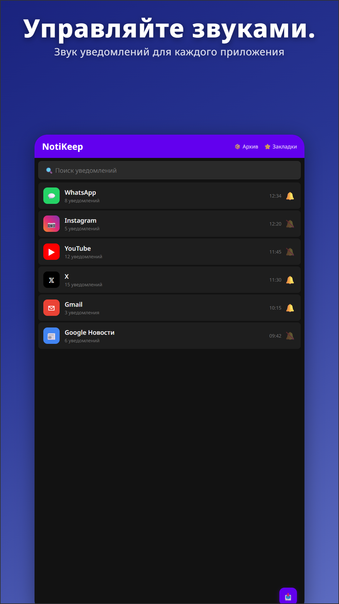
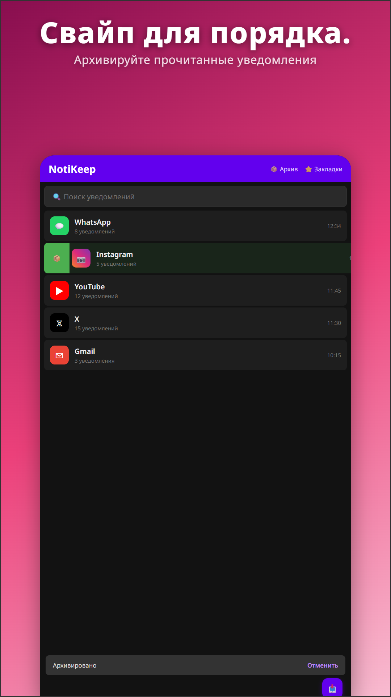
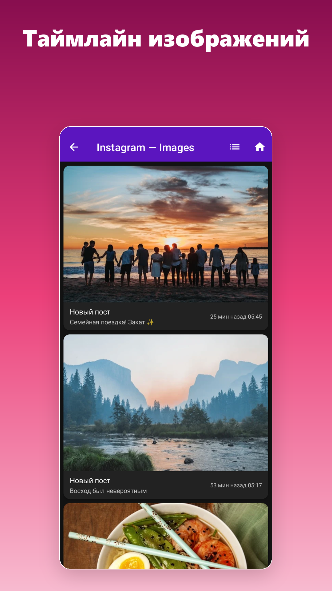
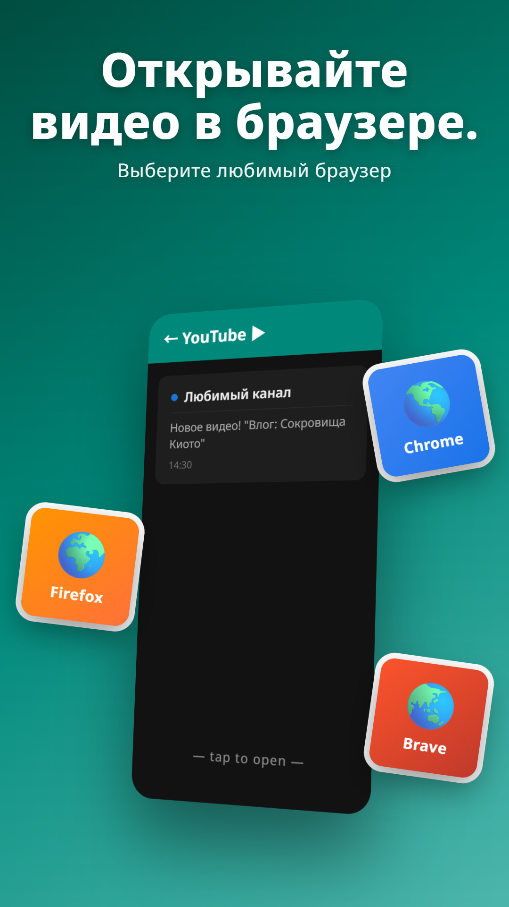

Фото, коды, сообщения — хранятся столько, сколько нужно.

NotiKeep сохраняет важное, выкидывает шум и возвращает вам уведомления, которые телефон уже забыл.
Однократная настройка. Доступ к уведомлениям — стандартный API Android, позволяющий приложению видеть уведомления. NotiKeep больше ни для чего его не использует.

NotiKeep работает в фоне. Полезные уведомления архивируются вместе с фото. Прогресс-бары и системные пинги отсеиваются автоматически — они не засоряют архив.

Ищите по архиву, свайпайте для сортировки, отмечайте важные звёздочкой. То уведомление, что нужно было три дня назад, прямо здесь — а не утеряно навсегда.
Каждое фото, пришедшее в уведомлении — превью YouTube из подписанных каналов, воспоминания «в этот день» из Google Photos, фото еды от друзей в LINE, превью новостных статей, подтверждения доставки, изредка пост из Instagram — всё в одной просматриваемой сетке. Даже после того, как вы смахнули исходное уведомление.

Нажмите на сохранённое уведомление YouTube, смотрите в Chrome, Firefox или Brave. Никаких падений в Shorts. Никакой алгоритмической тяги YouTube-приложения.

Просматривайте каждое фото, пришедшее в уведомлении, по датам.
Открывайте уведомления YouTube в выбранном вами браузере.
Прогресс-бары, фоновые сервисы, системные пинги — автоматически отбрасываются.
Отмечайте важное звёздочкой. Закладки не истекают даже в Free.
Один ZIP с архивом и изображениями. Смена телефона за секунды.
Три слота для собственных цветовых сочетаний. Под ваш стиль.
Отключите звук у приложений, которых не хотите слышать — но архивируйте их уведомления беззвучно.
Найдите любое уведомление по содержимому. Free: 30 дней. Pro: навсегда.
Английский, 日本語, 한국어, 中文, Español, Français, Deutsch и другие.
Цены указаны в USD. Google Play отображает эквивалент в вашей локальной валюте при оплате.
| Функция | Free | Pro |
|---|---|---|
| Архив уведомлений | ✓ | ✓ |
| Сохранение изображений (детальный вид) | ✓ | ✓ |
| Умный фильтр шума | ✓ | ✓ |
| Срок хранения | 30 дней (фикс.) | Настраиваемо · 30 дней → без ограничений |
| Поиск | Последние 30 дней | Весь архив |
| Закладки · Беззвучно · Блок | По 5 | Без ограничений |
| 📷 Лента изображений (просмотр сеткой) | — | ✓ |
| 🌐 Открывать YouTube в любом браузере | — | ✓ |
| 📦 Копия с изображениями | — | ✓ |
| 🎨 Свои темы | — | 3 слота |
▶ Попробовать NotiKeep 30 дней бесплатно
Нет. NotiKeep сохраняет только уведомления, пришедшие после установки и предоставления Доступа к уведомлениям. Android не даёт ни одному приложению доступ к прошлым уведомлениям — поэтому установите его до того, как понадобится что-то восстановить. Хорошая новость: как только он работает, новые уведомления уже не уйдут мимо.
Android 9.0 (Pie) и новее. Тестировано от Pixel 4a до Pixel 9 Pro. Последние Android 15 и 16 также поддерживаются.
Текстовые уведомления крошечные — несколько МБ покрывают месяцы архива. Место занимают изображения: каждое сохранённое фото перекодируется в WebP примерно 20–80 КБ. Активный пользователь с тысячей уведомлений с картинками в месяц использует около 30–80 МБ. Точное использование видно в Настройках, все изображения можно удалить в любой момент.
Все данные NotiKeep — уведомления, изображения, настройки, закладки — хранятся в приватном каталоге приложения, который Android автоматически очищает при удалении. Если хотите сохранить архив при переустановке или новом телефоне, сначала сделайте резервную копию (Pro-функция).
Только два: Доступ к уведомлениям (нужен любому приложению этой категории) и INTERNET (используется только Google Play Billing для покупки Pro). Больше ничего — никакой геолокации, контактов, аналитических SDK, трекеров.
Зашифрованные приложения отдают Android текст-заглушку «Новое сообщение» — никакого превью, которое мог бы перехватить любой логгер, нет. NotiKeep сохраняет то, что отдаёт система; если система получает заглушку, она и попадает в архив.
Да. Pro создаёт ZIP с базой данных, всеми сохранёнными изображениями, закладками, списками беззвучных и настройками. Восстановление на новом телефоне в один шаг. Экспорт уходит по выбранному вами пути — никакой автоматической облачной синхронизации.
Вы возвращаетесь на Free. Никаких списаний, никакой автоматической конверсии. Чтобы продолжить пользоваться Pro, активно выберите план в окне обновления. Это умолчание, потому что никому не нравится случайные списания в конце пробника.
Listener уведомлений Android управляется событиями — никакого опроса. NotiKeep работает только в момент прихода уведомления. Влияние на батарею в наших тестах на Pixel 7a и Pixel 9 Pro незначительно.
Нет. Всё хранится на устройстве, в приватном каталоге NotiKeep. Резервные копии идут по выбранному вами пути — никакой автоматической облачной синхронизации, никакой телеметрии «phone home», никакой удалённой аналитики.
30 дней бесплатно. Без карты, без автопродления.
▶ Получить NotiKeep в Google Play